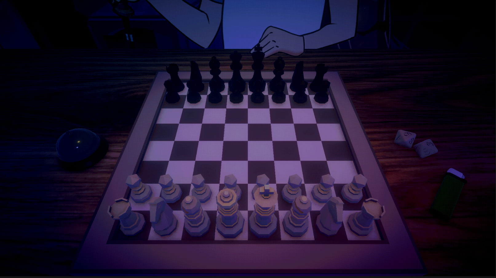

Me and a few friends planned to make a game for TOJam 2024: Talk About Fourshadowing.

We ended up agreeing on a game of chess but with a twist, the player would be able to use items that don’t belong in chess to change the game in interesting ways. The player could grab a lighter and set on of the pieces on fire, or roll dice and teleport a piece.